Attendance
The college attendance register, on every phone. How to use it as a student, a teacher, a head of department, a mentor or an administrator.
Attendance replaces the paper register. A teacher marks a class in a few taps. A student sees exactly where they stand. The head of department (HOD) sees every section, and every change is written to an audit trail.
| Role | What they do |
|---|---|
| Student | Checks their attendance, applies for leave with a certificate, joins events that count as attendance. |
| Teacher | Marks the register for their own classes, corrects mistakes within 48 hours, cancels a class they cannot take, decides leave for the section they are class teacher of. |
| HOD | Builds courses, sections, subjects and timetables, adds students, cancels classes for holidays and events, reads every record. |
| Mentor | Runs clubs and posts events that can credit class attendance. |
| Administrator | Creates the HOD, teacher and mentor accounts and resets passwords. Does not teach. |
Scan the QR code on the notice board, a slide or the stall with your phone camera. It opens the introduction page, which anyone can read before they have an account. From there, tap Sign in.
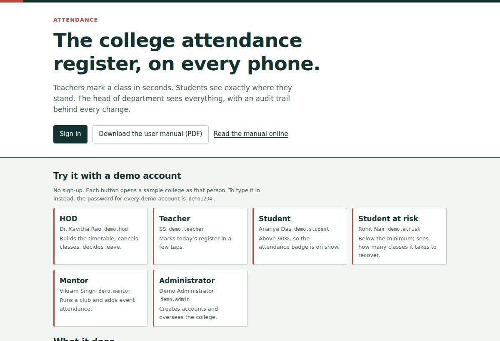
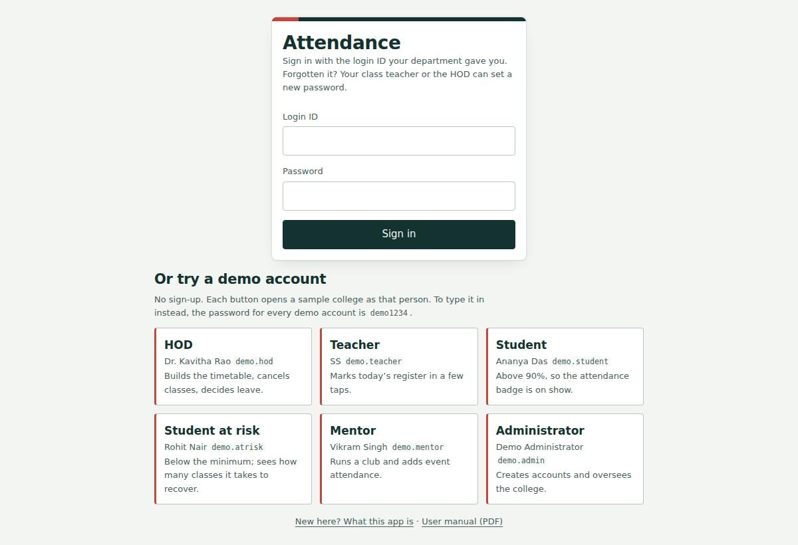
The left rail (the bottom bar on a phone) lists only what your role can use. Guide repeats the steps for your role inside the app, and has a button to download this manual.
Your percentage is measured against the classes your section actually held. A class counts as held once its teacher takes the register.
| Situation | How it counts |
|---|---|
| Present | Counts for you. |
| Absent | Counts against you. |
| Not marked | The class was held but the register has no mark for you. It counts as missed; if you were there, ask your teacher to correct it. |
| Approved leave | Left out completely, so approved leave never lowers your percentage. |
| Cancelled class | Never held, so it counts for nobody and nothing can be marked. |
| Event credit | A period credited by an event you took part in counts as present. |
| Before you joined | Classes held before your account existed do not count against you. |
Example. Your section held 91 classes. You were present at 88 and absent from 3: 88 ÷ 91 = 96.7%.
Each course has a minimum percentage set by the HOD; 75% if none was set. When you are below it, the app tells you how many classes you must attend in a row to reach it. It never tells you how many you can afford to skip.
The first page after signing in. The ring is your percentage against the minimum for your course. Below it: how many classes it takes to reach the minimum, the badge, today's classes (cancelled ones are struck through with the reason) and any classes cancelled in the days ahead.
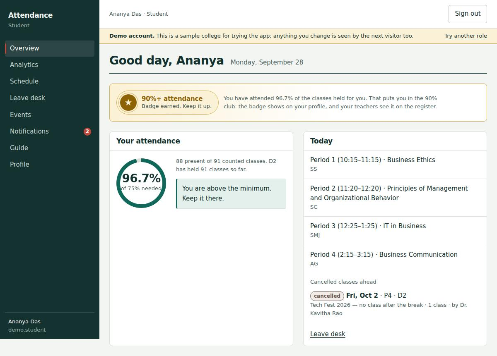
Analytics breaks your attendance down by subject: classes held, present, absent, not marked, leave, percentage, and classes needed. Attendance from events lists every class an event credited for you.
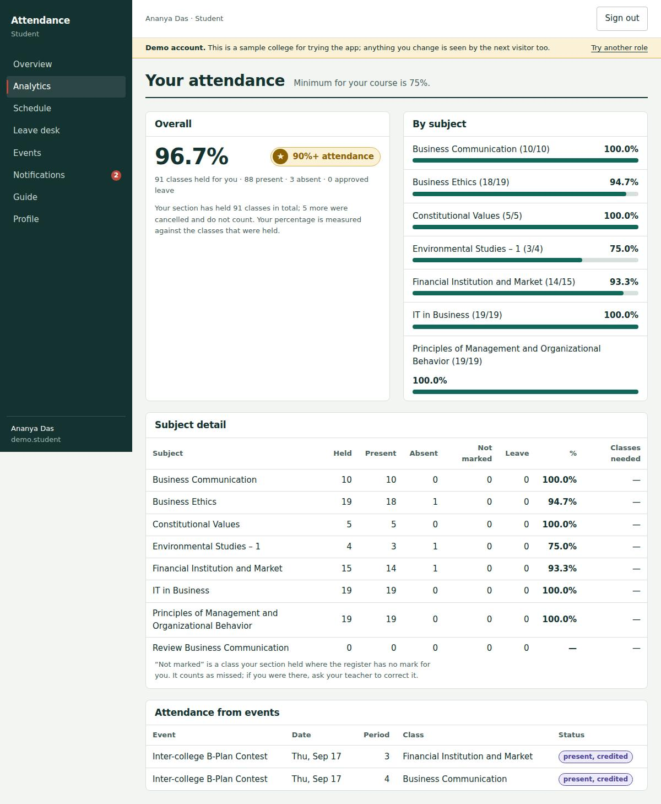
Schedule shows your section's week, with period times, the break and the after-hours activities, exactly as on the printed routine.
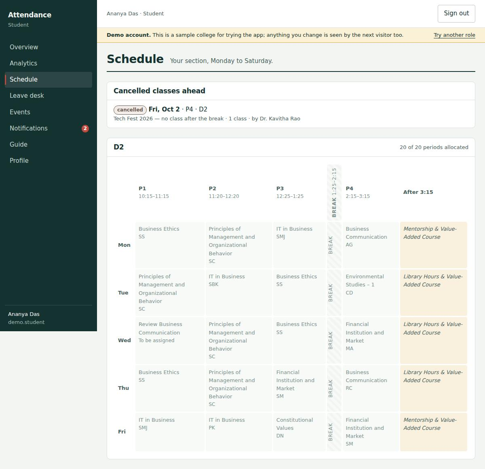
Once approved, every class in those days is marked as leave, and leave does not count against you.
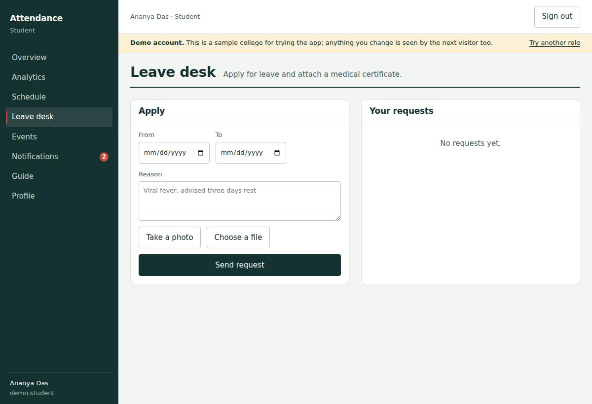
An event can credit class periods: if you take part, you are marked present in whatever class your section has in those periods. Tap Ask to join. When the organiser approves you, or adds your attendance directly, the event card shows exactly what it did.
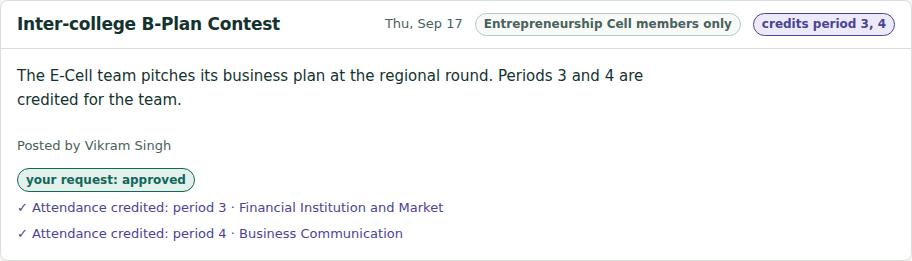
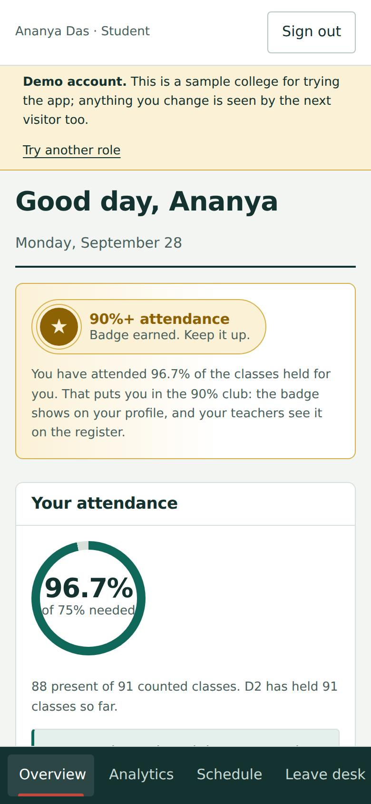
Your overview lists today's classes with their times. A class you cannot take can be cancelled right there with one tap on cancel, and undone the same way. Your students and the HOD are told.
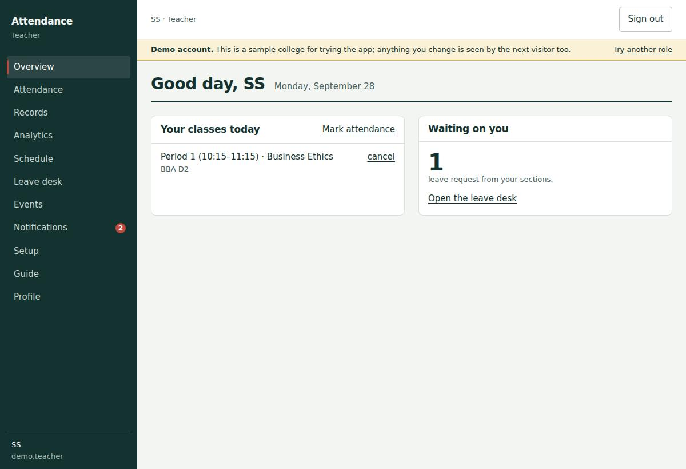
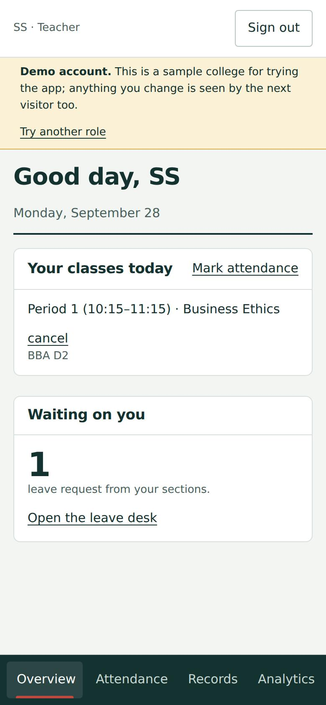
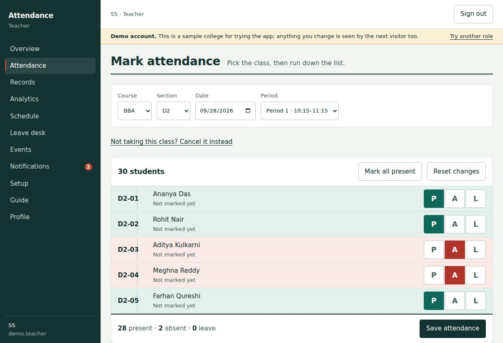
A row tinted purple was credited through an event, and says so; saving the register again keeps it credited.
Tap Correct on the student's row, choose the new status, give a short reason, and tap Save correction. You can correct your own marks for 48 hours. After that, the HOD makes the correction, and it is recorded against their name.
From your overview, tap cancel next to the class. Or, on the marking screen, open the class and tap Not taking this class? Cancel it instead, add a reason if you like, and tap Cancel this class. A cancelled class cannot be marked and counts for nobody. Restore this class undoes it. You can only cancel your own classes, and never one whose register you already took.
If you are a class teacher, requests from your section arrive on the Leave desk. Open the certificate with View medical certificate, add a note if you like, and tap Approve or Reject. Approving marks leave across every class of those days. Change this decision reverses it later, with a reason.
Records shows attendance by student, with anyone under the minimum flagged in red. Export all and Export under minimum download a CSV that opens in Excel. On a phone, they open the share sheet, so the file can go straight to WhatsApp or email.
Nobody can mark a register until the timetable exists, and each step depends on the one before it. Your overview shows a checklist until the department is set up.
| # | Where | What |
|---|---|---|
| 1 | Setup | Add the course (for example BBA). |
| 2 | Setup | Add its sections (D1, D2…) and subjects. |
| 3 | Setup | Create teacher accounts, or ask the administrator to. |
| 4 | Setup → Allocation | Give each section a class teacher. Leave requests go to them. |
| 5 | Schedule | Set the week, then fill each section's timetable (see below). |
| 6 | Setup | Set the minimum attendance percentage for the course. |
| 7 | Setup → Accounts | Add students one at a time, or paste a CSV with Bulk import: roll_number,name,login_id,password, one per line. |
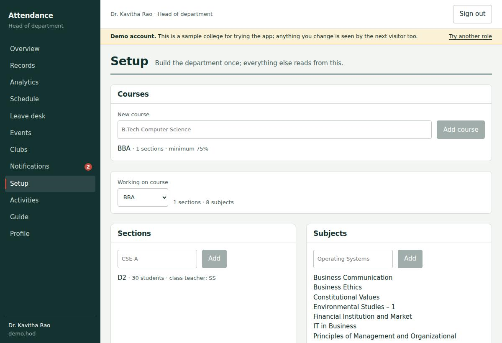
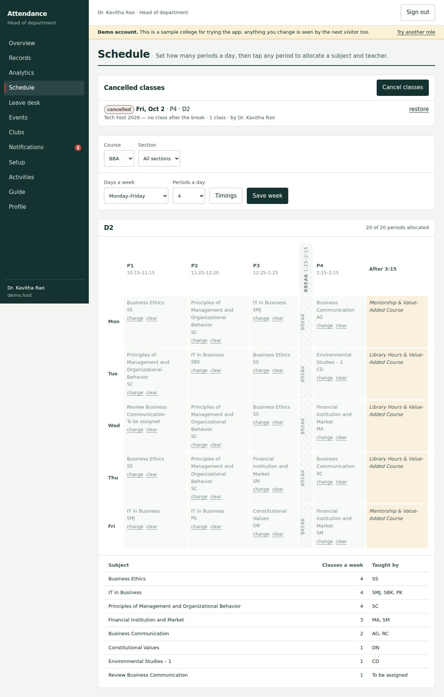
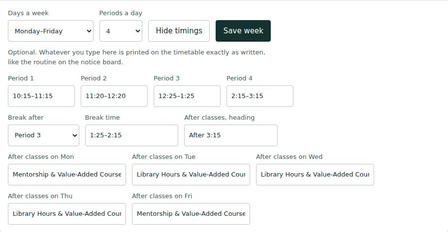
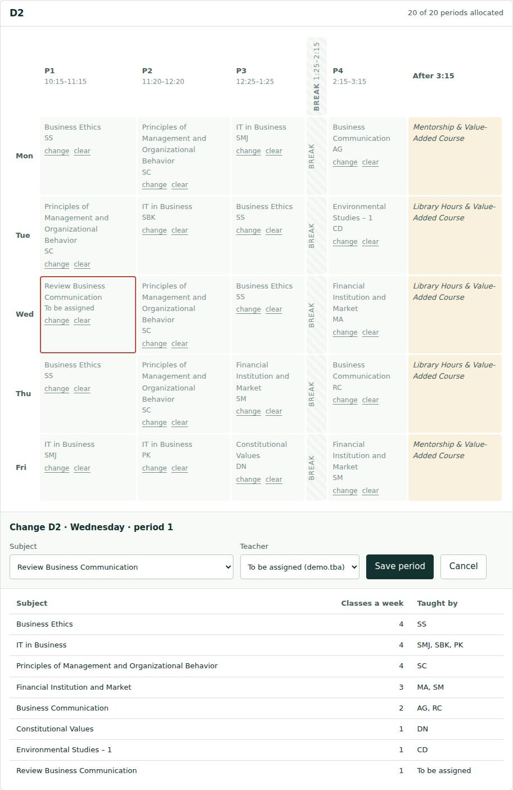
A whole routine can be loaded from a file instead of being typed period by period. The D2 BBA routine ships with the app as server/src/infra/db/timetables/d2-bba.json, and whoever runs the deployment can load it:
DATABASE_URL="…" npm run timetable:import -- server/src/infra/db/timetables/d2-bba.json --dry-run
DATABASE_URL="…" npm run timetable:import -- server/src/infra/db/timetables/d2-bba.jsonIt creates the course, section and subjects if needed, sets the week and timings, and makes the section's timetable match the file. A teacher it does not know yet gets an account with a one-time password, printed once, to hand over in person. Before importing into a real college's database, put each teacher's full name, and a loginId if you like, in the file. A class the routine lists without a teacher, such as Wednesday's review session, is left for you to allocate from Schedule.
For a holiday, a strike, exam day or a fest: open Schedule, tap Cancel classes, pick the date and tap the red button. That cancels every class in the college for the day. You can narrow it to one course or one section, pick periods, and give a reason, which students see.
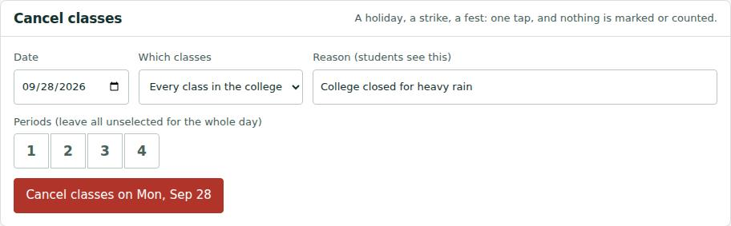
When classes are cancelled:
For a college-wide event, open it under Events and tap Cancel … for this event: its credit periods, or the whole day, are cancelled in one tap, with the event named as the reason.
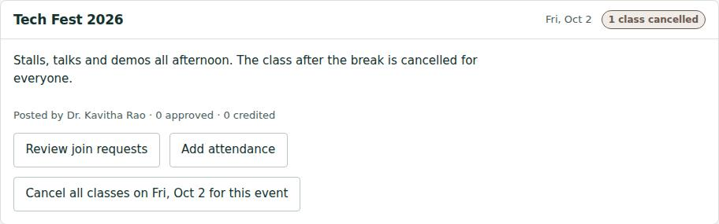
The overview counts the classes held so far, the classes held today and the cancellations ahead. It also shows average attendance by section, leave waiting for a decision and the latest activity.
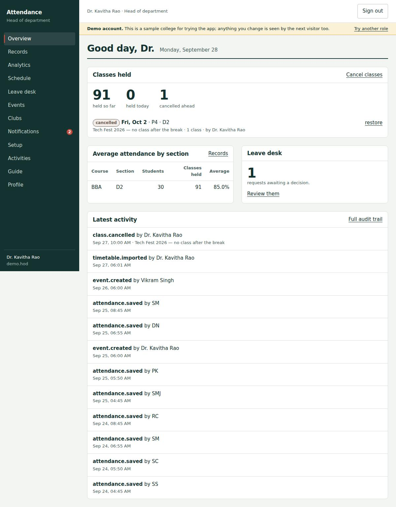
Pick a course or section, optionally a date range. Each row shows classes held, present, absent, not marked, leave and the percentage. Rows under the minimum are flagged; a ★ marks the 90% badge. Above the table, the number of classes the section held in that range. Print / PDF uses the browser's own PDF printing.
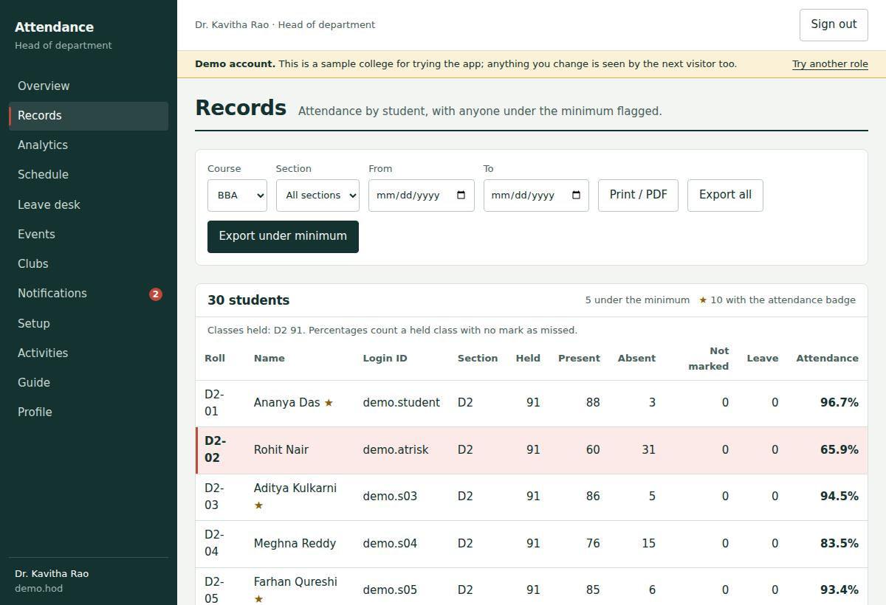
The Leave desk works as for a class teacher, for every section. Analytics shows each section's average against the classes it held, and how many were cancelled. Activities is the full audit trail: every mark, correction, cancellation, approval, credit and export, with who did it and why.
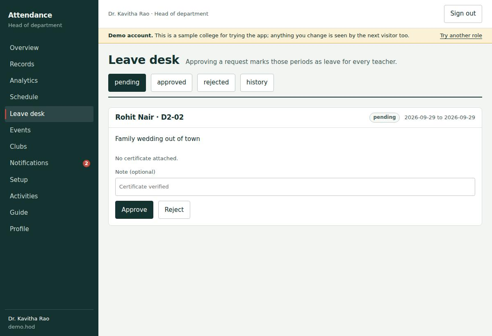
Under Clubs, create your club and add members by their login ID.
Students ask to join; tap Review join requests and Approve. Or record who took part directly: tap Add attendance, paste their login IDs (or tap Everyone who asked or All … club members), and tap the button. Their periods are credited at once, their teachers are told, and the table shows what was credited for each student.
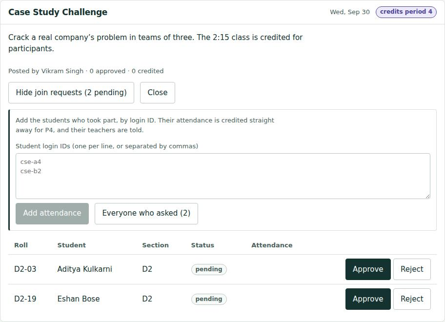
On a brand new deployment, the first person to open the site creates the administrator account. After that, every account is created inside the app.
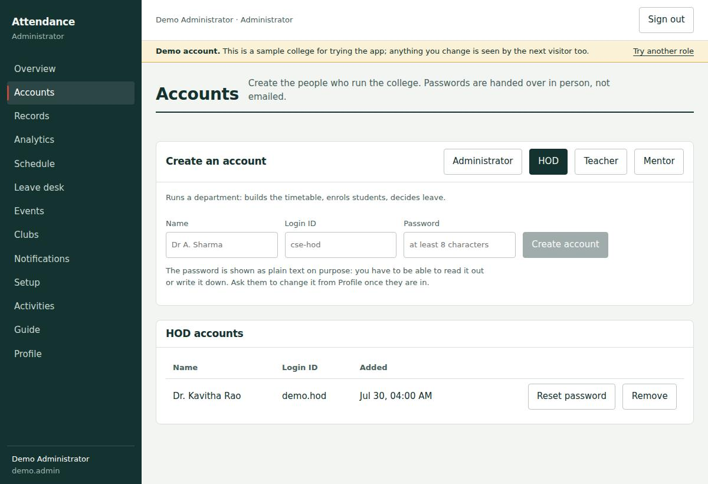
Under Guide, Share the app shows a QR code that opens the introduction page. Print a poster prints it large, on its own page, for a notice board or a stall.
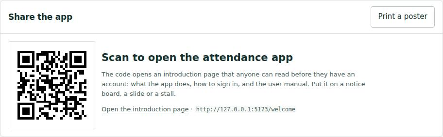
| If you are a… | Ask this person to reset your password |
|---|---|
| Student | Your class teacher, or the HOD |
| Teacher, mentor or HOD | An administrator |
| Administrator | Another administrator |
A demonstration deployment has a sample college and one-tap demo accounts, so visitors can try every role without typing a password. The demo college is built around the real D2 BBA routine; its students, marks and events are made up.
DATABASE_URL="…" npm run migrate
DATABASE_URL="…" npm run seed:demoDEMO_MODE=1. The sign-in and introduction pages then show the demo buttons.| Button | Login ID | What it shows |
|---|---|---|
| HOD | demo.hod | The D2 BBA timetable, one-tap cancellation, records, analytics |
| Teacher | demo.teacher | SS, class teacher of D2: today's classes, marking, a leave request to decide |
| Student | demo.student | Above 90% with the badge, and classes credited by an event |
| Student at risk | demo.atrisk | Below the minimum, and how many classes it takes to recover |
| Mentor | demo.mentor | The Entrepreneurship Cell, and join requests to approve |
| Administrator | demo.admin | Accounts, and the QR poster |
Every demo account's password is demo1234. Visitors cannot change it, reset another demo account's password, or remove a demo account, so nobody locks the next visitor out.
Visitors change things. To put the college back as it was:
DATABASE_URL="…" npm run seed:demo -- --resetIt only wipes a database that seed:demo created itself, and refuses any other. The history is dated back from the day it runs, so reset on the morning of the fest.
| What you see | What it means, and what to do |
|---|---|
| "The timetable has no class in that period for this section" | That period is empty on the timetable. The HOD fills it from Schedule. |
| "This class was cancelled…" | It was called off in advance. Whoever cancelled it, or the HOD, can restore it from Schedule. |
| "That period belongs to another teacher" | You can only mark classes the timetable gives you. |
| "The 48-hour edit window has closed" | Ask the HOD to correct it; the change is recorded with their name. |
| A class shows as not marked | It was held but you have no mark. If you were there, ask the teacher to correct the register. |
| An event did not change my percentage | Open the event card: it says which periods were credited and why any were not. |
| "That teacher already has a class in this period" | The teacher is in another section then. Pick another teacher or period. |
| "Too many failed attempts" | Wait a few minutes, or ask for a password reset, which clears the lock at once. |
| My percentage went down although nothing changed | A class you were not marked for was held. Check Not marked under Analytics. |
| Section | A class group within a course, such as D2. Students, timetables and class teachers belong to a section. |
| Period | One slot in the day, such as period 1, 10:15–11:15. |
| Register | The attendance list for one class on one date. |
| Held class | A class whose register was taken. Attendance is counted against held classes. |
| Not marked | A held class with no mark for a student. Counts as missed. |
| Cancelled class | A class called off in advance. Never marked, never counted. |
| Approved leave | Leave a class teacher or the HOD approved. Left out of the percentage. |
| Event credit | A period marked present because the student took part in an event. |
| Minimum | The attendance percentage a course requires; 75% unless the HOD set another. |
| Badge | The gold 90%+ attendance recognition. |
| Class teacher | The teacher responsible for a section, who decides its leave requests. |